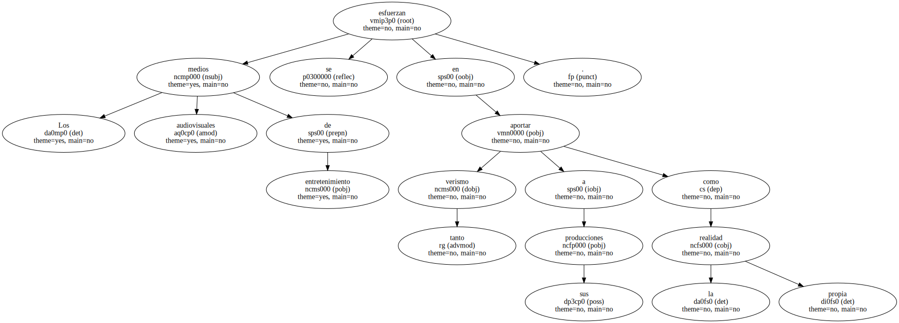
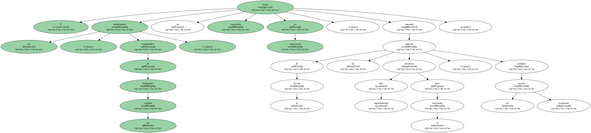
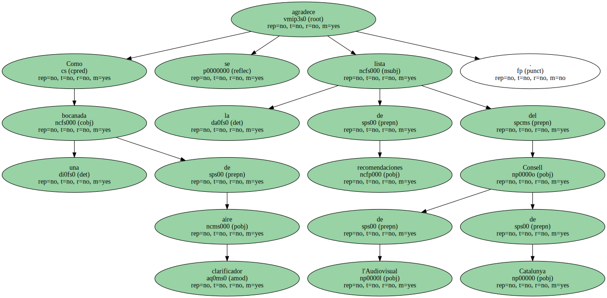
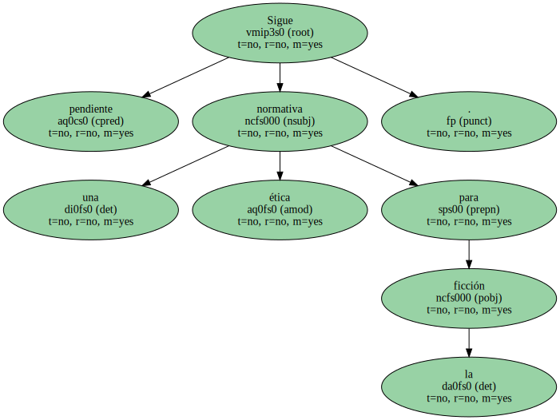
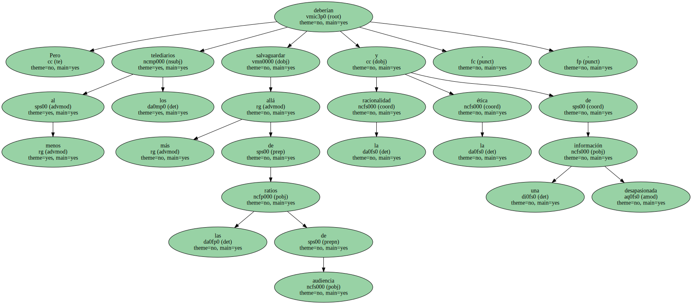

En esta sociedad donde impera la imagen nadie parece conformarse con ser como es.

Los medios audiovisuales de entretenimiento se esfuerzan en aportar tanto verismo a sus producciones como la propia realidad.
Y los informativos , responsables de testimoniar esa realidad , tratan de convertirla en espectáculo , tomando de la ficción los aspectos supuestamente más atractivos para el espectador , incluidas las escenas escabrosas.
Como una bocanada de aire clarificador se agradece la lista de recomendaciones del Consell de l'Audiovisual de Catalunya.
Sigue pendiente una normativa ética para la ficción.
Pero al menos los telediarios deberían salvaguardar la racionalidad y la ética de una información desapasionada , más allá de las ratios de audiencia.
